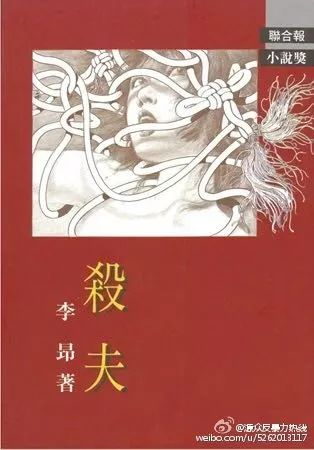
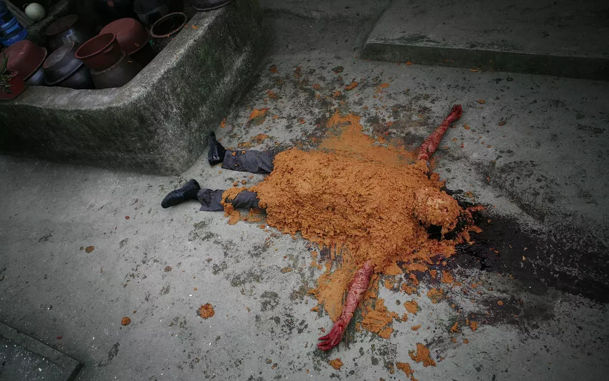
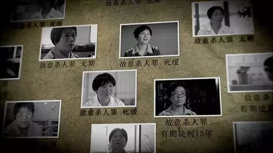

图说 | 杀夫
本文并非鼓吹暴力，而是反思“杀夫”现象背后的社会渊源。杀夫妇女不仅是施暴者，也是受害者，她们的孤注一掷是处于长期制度性压迫下的反弹，是走投无路时的“绝唱”。
《杀夫》中的男女

《杀夫》是李昂的代表作，写出了在农业文明之下，社会表情是封闭、落后与暴力的，贫穷是其本质特征。“吃不饱”的女性被人残害欺凌，“性”成了她们为维持生存而不得已换取的“饭票”。《杀夫》1983年一经出版，立即引起台湾文坛轰动，获《联合报》中篇小说奖第一名。
小说中的丈夫陈江水是一个以杀猪为趣的屠夫，每当屠宰猪只，濒死的猪发出尖锐刺耳而又绝望的叫声时，陈江水就会得到“无比的快感”。他把妻子当作取乐与施虐的工具，并屡屡以食物作为充满病态快感的奖惩。而妻子林市为求免于饥饿，惟有默默地忍受男性施加给自己的性暴力。她在暴力和侮辱下的驯服、哀求、拜祷，尝试经济自救，企图逃离家庭的“突围”，都无法使她摆脱噩梦一般的处境。最终，精神崩溃的林市以“杀猪”般的方式结束了丈夫陈江水的性命。

韩国电影《金福南杀人始末》剧照
“杀夫”并非个案。2005 年，央视《新闻调查》栏目做了一期有关“杀夫女犯”的节目，记者柴静与枪杀丈夫被判无期的 36 岁妇女燕静之间有这样一段对话。长期遭受家暴的燕静说，女儿的出生让一心想要儿子的丈夫很愤怒，当她看到丈夫的手伸向女儿时，拿起了他平常用来威胁自己的枪，给了他一枪。
Cell Block Tango与《天朝渣男图鉴》
音乐剧《芝加哥》中《Cell Block Tango》可谓是经典，里面也有着六个“杀”了丈夫的女人：第一个是软饭男，被开枪打死；第二个是骗婚，有六个妻子，被砒霜毒死；第三个匈牙利女人是无辜的被抓进来；第四个是暴躁丈夫怀疑妻子出轨，家暴过程中被妻子用刀捅死，第五个和妻子妹妹偷情，被枪杀；第六个出轨多人最后被勒死。
总之“谋杀、贪婪、腐败、剥削、通奸和背叛……”呈现的是一场极致的黑色幽默。
《Cell Block Tango》在中国的高知名度，一半来自《天朝渣男图鉴》，一半来自“《天朝渣男图鉴》被删”。
视频是六位自称“天朝渣男的资深体验人员”的自白。“天朝”是对“中国”的戏称，略带嘲讽的意味；“渣男”则是一个中文网络流行语，泛指人品差，如自私、不负责任、玩弄感情的男性。因“滴滴”以“侵犯商标权”为名投诉，视频随后在多个平台下架。
“胡同”故事的当事人用东北话讲到，她与丈夫结婚后发现他出轨，而丈夫会把所有发生过性关系的女人以不同形式“胡同”的方式记录下来，更指该女子是“死胡同”，暗指她是石女（先天性无阴道女性），于是女当事人杀掉不忠的丈夫。
“萨克斯”故事的叙述者持沪语，在咖啡馆认识吹萨克斯的另一半，然而婚后老公经常用萨克斯打她。饱受家暴的她于是用同样的方法杀死了丈夫。

“龟儿子”故事的女当事人用四川方言讲述到，她与丈夫领养了一个孩子，但丈夫丝毫不当他是亲生的，只称呼其为“龟儿子”，不仅疏忽照顾，甚至用溺死在浴盆的方式害死了孩子。于是当事人将男人扔入嘉陵江。
“XX”的故事叙述者持湖南方言的女性讲述了自己被前男友长期跟踪性骚扰的故事，其每日会在女当事人住宅楼下等候，并进行电话恐吓，换号码仍然如此。女当事人报警后，该男性被教育3日后便仍继续此前的性骚扰行为，女当事人一怒之下浇汽油烧死前男友。
“十四楼”的女当事人则是唯一一个没有杀人的女生。她用粤语描述到，自己被黑社会男友利用，男友谎称她租住的房子“十四楼”藏毒，并将毒品放在其衣柜内，从而使女当事人惹上了藏毒的罪名。
“妹儿睡了”这段故事的讲述者持山东方言，家中育有三子，丈夫为了2万元人民币（约合2,890美元）给小女儿结了冥婚，并杀死了孩子。于是她杀掉丈夫，“替当娘的我多喝杯喜酒，多受个叩头” ...
当荒诞照进现实
而《天朝渣男图鉴》的可怕之处在于其实实在在反映出的现实，荒诞离奇的故事在现实中真实存在：
“胡同-婚外恋”——2018年7月24日，江西省抚州市乐安县的杨某因犯故意杀人罪被提起公诉，被处以有期徒刑15年。杨某在2018年2月19日（农历正月初四）晚，在与丈夫激烈争执后一怒之下将其杀害。杨某丈夫2014年发生婚外恋情，杨某挽回未果且丈夫变本加厉，回家次数减少，工资也不再补贴家用，并带情妇回家“炫耀”。当晚，二人在又因婚外恋争执后发生惨案。
“萨克斯-气枪”——2010年11月，一位名叫李彦的四川女子为阻止丈夫的殴打，用气枪枪托反复打击其夫头部，终致其死亡。
“龟儿子-养女“——2017年，福建省郑某性侵养女长达三年，并致其怀孕，但公安机关对于群众的反映一直未有足够重视。在相关NGO发现并向检察机关通报后方予以立案，郑某后被判处无期徒刑。
“滴滴-性骚扰“——台湾新北市曾有一位李姓男子，对黄姓女子频繁性骚扰，黄性女当事人五年内搬家三次仍无法摆脱，报警后警方指该男子出现在公共场所因而也无法处置，诉诸法院则缴纳罚金后便继续出现。
“十四楼-毒品“——2017年，中华航空的林姓空姐在返台时被海关在行李箱内查获疑似毒品，林姓女子表示遭人设计陷害，后经半年调查，检方证女当事人清白。
“妹儿睡了-阴婚”——2015年，中国山西一位11岁少女酒精中毒离世，死因是其父为用“阴婚”得来的8万元人民币礼金还债，因而下毒手杀害女儿，并为其“配阴婚”。

《不要和陌生人说话》剧照
此外据统计，2014 年至 2017 年，涉及家庭犯罪中有 252 名被告人涉及故意杀人罪，其中由受害人转化为以暴制暴者的有 117 人，占总数的 46% 。
2007 年，陕西省女子监狱的服刑人员中，因遭受家庭暴力而故意杀人的女性罪犯占所有故意杀人犯罪服刑人员总数的 30.35%，其中 90% 以上的妇女因为常年遭受丈夫的暴力伤害；江苏省妇联对该省某女子监狱 1477 名女性罪犯的问卷调查显示：237 名女性罪犯的家庭存在家庭暴力的情况，其中有 62 人因不堪忍受丈夫家暴而故意杀人。
2015 年，《关于依法办理家庭暴力犯罪案件的意见》发布，明确了对因家庭暴力引发的伤害、杀害施暴者的刑事案件，要充分考量其中的过错责任以及防卫因素。但是，这并不具备强制性。
也有一些辩护人，援引西方的“受虐妇女综合症”理论，为自己的当事人进行无罪或轻罪辩护，但从未有人藉此免予刑事处罚。

央视八集系列片《中国反家暴纪事》截图
反家暴之路未竟，以暴制暴非正途，
《反家暴法》虽已立，仍待与君反暴力。